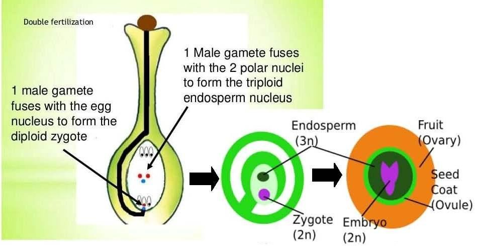
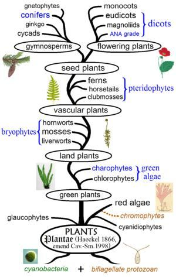

―The Creator of the Skies and Lands. He has made for you pairs from among yourselves, and pairs among cattle. By this means does He multiply you. There is nothing whatever like unto Him; and He is the One that hears and sees.‖ [Al Quran 42:11]
- আকাশ ও জমিনের স্রষ্টা। তিনি তোমাদের জন্য তোমাদের মধ্য থেকে জোড়া সৃষ্টি করেছেন এবং চতুষ্পদ জন্তুদের মধ্যেও জোড়া সৃষ্টি করেছেন। এর মাধ্যমে তিনি আপনাকে সংখ্যাবৃদ্ধি করেন। তাঁর অনুরূপ কিছুই নেই; এবং তিনিই শোনেন ও দেখেন।'' [আল কুরআন 42:11]
In the verse above, cattle are mentioned to clarify that by 'pairs,' the verse is not referring to a married couple, as cattle do not marry. The pairs are created from among us, as the verse says: "He has made for you pairs from among yourselves," These 'created pairs' are the means of reproduction, as the verse says: "by this means does He multiply you."
উপরের আয়াতে গবাদি পশুর কথা উল্লেখ করা হয়েছে স্পষ্ট করার জন্য যে 'জোড়া' দ্বারা, আয়াতটি বিবাহিত দম্পতিকে নির্দেশ করছে না, কারণ গবাদি পশুরা বিয়ে করে না। জোড়াগুলো আমাদের মধ্য থেকে সৃষ্টি করা হয়েছে, যেমন আয়াতে বলা হয়েছে: "তিনি তোমাদের জন্য তোমাদের নিজেদের মধ্য থেকে জোড়া তৈরি করেছেন," এই 'সৃষ্ট জোড়া' হল প্রজননের মাধ্যম, যেমন আয়াতটি বলে: "এর মাধ্যমে তিনি তোমাদের সংখ্যাবৃদ্ধি করেন।"
FIGURE 13.18: Chromosome So, in this verse, the 'pairs' mean 'Haploid Chromosomes' that are available in the sperm. Each Haploid Chromosome contains one Double Helix DNA Molecule (Pair). The Diploid Chromosomes are made in the zygote through the fusion of sperm and ovum. Therefore, in the above verses as well, 'Pair' refers to the 'Double Helix DNA Molecule'.

চিত্র 13_18 / Figure 13_18
চিত্র 13.18: ক্রোমোজোম সুতরাং, এই আয়াতে, 'জোড়া' মানে 'হ্যাপ্লয়েড ক্রোমোজোম' যা শুক্রাণুতে পাওয়া যায়। প্রতিটি হ্যাপ্লয়েড ক্রোমোজোমে একটি ডাবল হেলিক্স ডিএনএ অণু (জোড়া) থাকে। ডিপ্লোয়েড ক্রোমোজোমগুলি শুক্রাণু এবং ডিম্বাণুর সংমিশ্রণের মাধ্যমে জাইগোটে তৈরি হয়। অতএব, উপরের আয়াতগুলিতেও, 'জোড়া' বলতে 'ডাবল হেলিক্স ডিএনএ অণু'কে বোঝায়।
চিত্র 13_18 / Figure 13_18
5b. Pair and Double Pollination
5 খ. পেয়ার এবং ডাবল পরাগায়ন
Now, we can return to the verse under discussion: ―…and of the all fruits He made in it—pairs two.‖ A pollen grain is haploid—it possesses half of the DNA needed to make the plant. It combines with another half of the DNA that is in the egg cell and form the zygote. In plants, this part is like sexual reproduction in animal. But a second fertilization is needed in the plants to produce a fruit. The ―Double Fertilization‖ is unique in plants. In Double Fertilization, two sperm cells fertilize the cells in the plant ovary. After a pollen grain sticks to the stigma of the pistil, at one stage, a haploid cell divides into two haploid sperm cells. One sperm (n) fertilize the egg cell (n) and produces a zygote (2n). The zygote develops into embryo. Another sperm cell fuses with two cell nuclei and produce a triploid cell (3n). The triploid cell develops into the endosperm, which serves as the food supply for embryo. The process is called Double Pollination. FIGURE 13.19: Double Pollination

চিত্র 13_19 / Figure 13_19
এখন, আমরা আলোচনার অধীন শ্লোকটিতে ফিরে যেতে পারি: "...এবং তিনি এতে যে সমস্ত ফল তৈরি করেছিলেন - তার মধ্যে দুটি - জোড়া। - একটি পরাগ দানা হ্যাপ্লয়েড - এটি উদ্ভিদ তৈরির জন্য প্রয়োজনীয় ডিএনএর অর্ধেক ধারণ করে৷ এটি ডিমের কোষে থাকা ডিএনএর অর্ধেকের সাথে একত্রিত হয় এবং জাইগোট গঠন করে। উদ্ভিদে, এই অংশটি প্রাণীর যৌন প্রজননের মতো। কিন্তু একটি ফল উৎপাদনের জন্য উদ্ভিদে দ্বিতীয় নিষেকের প্রয়োজন হয়। "ডাবল ফার্টিলাইজেশন" উদ্ভিদে অনন্য। ডাবল ফার্টিলাইজেশনে, দুটি শুক্রাণু কোষ উদ্ভিদের ডিম্বাশয়ের কোষগুলিকে নিষিক্ত করে। একটি পরাগ দানা পিস্টিলের কলঙ্কের সাথে লেগে থাকার পর, এক পর্যায়ে একটি হ্যাপ্লয়েড কোষ দুটি হ্যাপ্লয়েড শুক্রাণু কোষে বিভক্ত হয়। একটি শুক্রাণু (n) ডিম কোষ (n) নিষিক্ত করে এবং একটি জাইগোট (2n) তৈরি করে। জাইগোট ভ্রূণে বিকশিত হয়। আরেকটি শুক্রাণু কোষ দুটি কোষের নিউক্লিয়াসের সাথে মিলিত হয় এবং একটি ট্রিপ্লয়েড কোষ (3n) উৎপন্ন করে। ট্রিপ্লয়েড কোষটি এন্ডোস্পার্মে বিকশিত হয়, যা ভ্রূণের খাদ্য সরবরাহ করে। প্রক্রিয়াটিকে ডাবল পরাগায়ন বলে। চিত্র 13.19: দ্বিগুণ পরাগায়ন
চিত্র 13_19 / Figure 13_19
So, by 'Pairs Two,' the verse refers to 'Double Helix DNA Molecules,' which cause the Double Pollination necessary for the production of fruit. This phenomenon is unique to fruit-producing flowering plants.
সুতরাং, 'জোড়া দুই' দ্বারা, শ্লোকটি 'ডাবল হেলিক্স ডিএনএ অণু'কে নির্দেশ করে, যা ফল উৎপাদনের জন্য প্রয়োজনীয় দ্বিগুণ পরাগায়ন ঘটায়। এই ঘটনাটি ফল-উৎপাদনকারী ফুলের উদ্ভিদের জন্য অনন্য।
5c. Continental Drift and Fruits
5 গ. কন্টিনেন্টাল ড্রিফ্ট এবং ফল
How is the production of fruits related to the spread of landmasses (continental drift)? The spread of landmasses is linked to the supply of water, and the supply of water is linked to the production of fruit. Fossil records indicate that fruit-producing plants appeared with the advent of pollinating insects (such as bees) about 73 to 56 million years ago, when the continents had adequately drifted, and firmly established high mountains began to draw clouds from the equatorial belt, producing rainfalls. The rainwater created rivers and raised levels of groundwater, which were essential to sustain the large, fruit-bearing trees. 5d. Continental Drift and Suitable Plants
কিভাবে ফলের উৎপাদন স্থলভাগের বিস্তারের সাথে সম্পর্কিত (মহাদেশীয় প্রবাহ)? জমির বিস্তার জল সরবরাহের সাথে যুক্ত, এবং জল সরবরাহ ফল উৎপাদনের সাথে যুক্ত। জীবাশ্মের রেকর্ডগুলি নির্দেশ করে যে ফল-উৎপাদনকারী উদ্ভিদগুলি প্রায় 73 থেকে 56 মিলিয়ন বছর আগে পরাগায়নকারী পোকামাকড়ের (যেমন মৌমাছি) আবির্ভাবের সাথে আবির্ভূত হয়েছিল, যখন মহাদেশগুলি পর্যাপ্তভাবে প্রবাহিত হয়েছিল, এবং দৃঢ়ভাবে প্রতিষ্ঠিত উচ্চ পর্বতগুলি নিরক্ষীয় অঞ্চল থেকে মেঘ আঁকতে শুরু করেছিল, বৃষ্টিপাত তৈরি করেছিল। বৃষ্টির পানি নদী সৃষ্টি করেছে এবং ভূগর্ভস্থ পানির স্তর বাড়িয়েছে, যা বড়, ফলধারী গাছকে টিকিয়ে রাখার জন্য অপরিহার্য ছিল। 5d. কন্টিনেন্টাল ড্রিফ্ট এবং উপযুক্ত গাছপালা
The Earth was formed about 4.6 billion years ago, and the first living creatures appeared around 3.5 billion years ago. Evolution progressed as it was designed and guided by Allah, step by step, over time.
পৃথিবী প্রায় 4.6 বিলিয়ন বছর আগে গঠিত হয়েছিল এবং প্রায় 3.5 বিলিয়ন বছর আগে প্রথম জীবিত প্রাণীর আবির্ভাব হয়েছিল। সময়ের সাথে সাথে ধাপে ধাপে আল্লাহ কর্তৃক পরিকল্পিত ও নির্দেশিত হওয়ার সাথে সাথে বিবর্তন এগিয়েছে।
FIGURE 13.20: Evolution of Flowering Plants Approximately 250 million years ago, the final phase of preparing the Earth for Adam began, marked by massive changes and developments. Allah spread out the land and produced suitable plants for humans and domestic animals. Palms, herbs, and grasses began to appear around 200 million years ago. Several verses of the Quran narrate these events together:

চিত্র 13_20 / Figure 13_20
চিত্র 13.20: ফুলের উদ্ভিদের বিবর্তন প্রায় 250 মিলিয়ন বছর আগে, আদমের জন্য পৃথিবী প্রস্তুত করার চূড়ান্ত পর্যায় শুরু হয়েছিল, যা ব্যাপক পরিবর্তন এবং উন্নয়ন দ্বারা চিহ্নিত হয়েছিল। আল্লাহ জমি বিস্তৃত করেছেন এবং মানুষ এবং গৃহপালিত পশুদের জন্য উপযুক্ত গাছপালা উৎপাদন করেছেন। খেজুর, ভেষজ এবং ঘাস প্রায় 200 মিলিয়ন বছর আগে উপস্থিত হতে শুরু করে। কুরআনের বেশ কয়েকটি আয়াতে এই ঘটনাগুলো একত্রে বর্ণনা করা হয়েছে:
চিত্র 13_20 / Figure 13_20
"It is He Who has spread out the land for creatures. Therein are fruit and date palms (monocots) producing spathes. Also corn with leaves and stalk for fodder, and sweet-smelling plants." [Al Quran 55: 10-12]
"তিনিই প্রাণীদের জন্য জমি বিছিয়ে দিয়েছেন। তাতে রয়েছে ফল ও খেজুর (মনোকোট) স্প্যাথ উৎপাদনকারী। এছাড়াও ভুট্টা, পাতা ও ডালপালা দিয়ে খাদ্যের জন্য এবং মিষ্টি গন্ধযুক্ত উদ্ভিদ।" [আল কুরআন 55:10-12]
[The Quran supports biological evolution, except in the case of humans. This is discussed in Section 12 of Chapter 24]
[কুরআন জৈবিক বিবর্তনকে সমর্থন করে, মানুষের ক্ষেত্রে ছাড়া। এটি 24 অধ্যায়ের 12 ধারায় আলোচনা করা হয়েছে]
6. Rotation of the Earth
6. পৃথিবীর ঘূর্ণন
―And it is He who spread out the land, and set thereon mountains standing firm, and rivers; and of the all fruits He made in it—pairs two (Double Pollination); He draws the night as a veil over the Day. Behold, verily in these things there are signs for those who consider!‖ In the Quran, the concept of the Earth's rotation is always mentioned indirectly because, in ancient times, people were firmly convinced that the Earth was fixed. It would have been an additional burden to make them believe that the Earth was rotating. Therefore, this idea is conveyed indirectly. The Earth rotates, causing the 'day side' to gradually transit into the 'night side,' as a veil of darkness, spreading over the day. The production of fruits is clearly linked to the cycle of day and night, as trees cannot grow without both. However, continental drift may also be related to the Earth's rotation. The widely accepted theory suggests that convection currents in the Earth's mantle drive the movement of tectonic plates, which I have discussed. Yet, a newer concept proposes that continental drift is actually caused by the forces generated by the Earth's rotation and the tidal forces of the Sun and Moon. This new concept seems more plausible, as the verse mentions the Earth's rotation right after discussing continental drift.
- আর তিনিই জমিনকে বিস্তৃত করেছেন এবং তার উপর স্থাপন করেছেন দৃঢ়ভাবে পর্বতমালা এবং নদীসমূহ; এবং এতে তিনি যে সমস্ত ফল তৈরি করেছিলেন তার মধ্যে দুটি জোড়া (ডাবল পরাগায়ন); তিনি রাতকে দিনের উপর আবরণ হিসাবে আঁকেন। দেখো, নিশ্চয়ই এসব বিষয়ের মধ্যে চিন্তাশীলদের জন্য নিদর্শন রয়েছে!'' কুরআনে পৃথিবীর ঘূর্ণনের ধারণা সর্বদা পরোক্ষভাবে উল্লেখ করা হয়েছে কারণ, প্রাচীনকালে মানুষ দৃঢ়ভাবে বিশ্বাস করত যে পৃথিবী স্থির। তাদের বিশ্বাস করাতে এটি একটি অতিরিক্ত বোঝা হয়ে যেত যে পৃথিবী ঘুরছে। অতএব, এই ধারণাটি পরোক্ষভাবে জানানো হয়। পৃথিবী ঘোরে, যার ফলে 'দিনের দিক' ধীরে ধীরে 'রাতের দিকে' স্থানান্তরিত হয়, অন্ধকারের আবরণ হিসাবে, দিনে ছড়িয়ে পড়ে। ফলের উৎপাদন দিন এবং রাতের চক্রের সাথে স্পষ্টভাবে যুক্ত, কারণ উভয় ছাড়া গাছ বাড়তে পারে না। যাইহোক, মহাদেশীয় প্রবাহ পৃথিবীর ঘূর্ণনের সাথে সম্পর্কিত হতে পারে। ব্যাপকভাবে স্বীকৃত তত্ত্বটি প্রস্তাব করে যে পৃথিবীর আবরণে পরিচলন স্রোত টেকটোনিক প্লেটের গতিবিধি চালায়, যা আমি আলোচনা করেছি। তবুও, একটি নতুন ধারণা প্রস্তাব করে যে মহাদেশীয় প্রবাহ আসলে পৃথিবীর ঘূর্ণন এবং সূর্য ও চাঁদের জোয়ারের শক্তি দ্বারা সৃষ্ট শক্তি দ্বারা সৃষ্ট হয়। এই নতুন ধারণাটি আরও প্রশংসনীয় বলে মনে হচ্ছে, কারণ আয়াতটি মহাদেশীয় প্রবাহ নিয়ে আলোচনা করার পর পৃথিবীর ঘূর্ণনের কথা উল্লেখ করেছে।
7. Conclusion
7. উপসংহার
The sign of divinity in the verse under discussion is that the fundamental developments toward making the Earth suitable for humans are presented in a proper sequence: ―And it is He who spread out the land, and set thereon mountains standing firm, and rivers; and of the all fruits He made in it—pairs two; He draws the night as a veil over the Day. Behold, verily in these things there are signs for those who consider!‖
আলোচ্য আয়াতে দেবত্বের নিদর্শন হল পৃথিবীকে মানুষের উপযোগী করে তোলার জন্য মৌলিক অগ্রগতিগুলোকে যথাযথ ক্রমানুসারে উপস্থাপন করা হয়েছে: “এবং তিনিই ভূমিকে বিস্তৃত করেছেন, এবং তার উপর পর্বতমালা স্থাপন করেছেন দৃঢ়ভাবে, এবং নদীসমূহ; এবং তিনি তাতে তৈরি করেছেন সমস্ত ফল-দুটি; তিনি রাতকে দিনের উপর আবরণ হিসাবে আঁকেন। দেখ, নিশ্চয়ই এসবের মধ্যে নিদর্শন রয়েছে তাদের জন্য যারা চিন্তা করে!”
Section 4 of Chapter 13 [Verse 4]: Spread of Land and the Human Habitability
অধ্যায় 13 এর অধ্যায় 4 [পদ 4]: জমির বিস্তার এবং মানুষের বাসযোগ্যতা
And in the earth are tracts neighboring, and gardens of vines, and fields sown with corn, and palm trees growing out of single roots or otherwise, watered with the same water, yet some of them We make more excellent than others to eat. Behold, verily in these things there are signs for those who understand!
আর পৃথিবীতে রয়েছে আশেপাশের ভূমি, আঙ্গুরের বাগান, শস্য বোনা ক্ষেত, এবং খেজুর গাছ একক শিকড় থেকে বা অন্যথায়, একই জলে জল দেওয়া হয়, তবুও তাদের কিছুকে আমরা খাওয়ার জন্য অন্যদের চেয়ে উত্তম তৈরি করি। দেখ, নিঃসন্দেহে এগুলোর মধ্যে নিদর্শন রয়েছে তাদের জন্য যারা বোঝে!
Remarks:
মন্তব্য:
The verse mentions gardens of vines, fields of corn, and palm trees. These are not typical plants of deserts and steppes; rather, they are found in hilly terrains with moderate rainfall. Vineyards (gardens of grapes) have unique characteristics. One traveling through the countryside of Europe may observe them on the slopes of hills. Valleys are suitable for growing corn, which can also thrive on the hills, even in reddish soil. Tall palm trees are often seen near fountains. In hilly terrains, the lands suitable for cultivating these crops are accessible through naturally formed valleys, springs, and hilly tracts. The tastes vary from fruit to fruit, even when they come from plants of the same species and are watered with the same water. Many factors, including the flow of cold air, the amount of sunlight, and the supply of water, affect the taste. The spread of land (continental drift), the formation of mountains and rivers, and the creation of terrains suitable for human use all demonstrate that a Merciful God has deliberately crafted the Earth for creatures like us. Section 5 of Chapter 13 [Verse 5-7]: Truly a Warner
আয়াতে দ্রাক্ষালতার বাগান, ভুট্টার ক্ষেত এবং খেজুর গাছের কথা বলা হয়েছে। এগুলি মরুভূমি এবং স্টেপসের সাধারণ উদ্ভিদ নয়; বরং, তারা মাঝারি বৃষ্টিপাত সহ পাহাড়ি অঞ্চলে পাওয়া যায়। দ্রাক্ষাক্ষেত্রের (আঙ্গুরের বাগান) অনন্য বৈশিষ্ট্য রয়েছে। ইউরোপের গ্রামাঞ্চলে ভ্রমণকারী কেউ পাহাড়ের ঢালে তাদের পর্যবেক্ষণ করতে পারে। উপত্যকাগুলি ভুট্টা জন্মানোর জন্য উপযুক্ত, যা পাহাড়ে এমনকি লালচে মাটিতেও ফলতে পারে। ঝর্ণার কাছাকাছি লম্বা পাম গাছ প্রায়ই দেখা যায়। পার্বত্য অঞ্চলে, এই ফসল চাষের জন্য উপযোগী জমিগুলি প্রাকৃতিকভাবে গঠিত উপত্যকা, ঝর্ণা এবং পাহাড়ি অঞ্চলের মাধ্যমে অ্যাক্সেসযোগ্য। একই প্রজাতির গাছপালা থেকে আসা এবং একই জল দিয়ে জল দেওয়া হলেও স্বাদ ফল থেকে ফলের মধ্যে পরিবর্তিত হয়। ঠান্ডা বাতাসের প্রবাহ, সূর্যালোকের পরিমাণ এবং জল সরবরাহ সহ অনেকগুলি কারণ স্বাদকে প্রভাবিত করে। ভূমির বিস্তৃতি (মহাদেশীয় প্রবাহ), পর্বত ও নদীর গঠন এবং মানুষের ব্যবহারের উপযোগী ভূখণ্ডের সৃষ্টি সবই প্রমাণ করে যে একজন করুণাময় ঈশ্বর আমাদের মতো প্রাণীদের জন্য ইচ্ছাকৃতভাবে পৃথিবী তৈরি করেছেন। অধ্যায় 13 এর অধ্যায় 5 [পদ 5-7]: সত্যিই একজন সতর্ককারী
If you wonder, strange is their saying: "When we are dust, shall we indeed then be in a creation renewed?" They are those who deny their Lord; they are those, round whose necks will be yokes; they will be companions of the Fire to dwell therein! They ask you to hasten on the evil in preference to the good yet have come to pass before them exemplary punishments! But verily your Lord is full of forgiveness for mankind for their wrongdoing, and verily your Lord is strict in punishment. And the Unbelievers say: "Why is not a sign sent down to him from his Lord?" But you are truly a Warner, and to every people a guide.
আপনি যদি আশ্চর্য হন, তাদের এই উক্তিটি আশ্চর্যজনক যে, "যখন আমরা ধূলিকণা হব, তখন কি আমরা নতুন সৃষ্টিতে থাকব?" তারাই তারা যারা তাদের পালনকর্তাকে অস্বীকার করে; তারাই তারা, যাদের গলায় জোয়াল হবে; তারা জাহান্নামের সঙ্গী হবে যেখানে তারা বাস করবে। তারা আপনাকে ভালোর পরিবর্তে মন্দ কাজ ত্বরান্বিত করতে বলে অথচ তাদের সামনে দৃষ্টান্তমূলক শাস্তি এসেছে! কিন্তু নিঃসন্দেহে আপনার পালনকর্তা মানুষের জন্য তাদের অন্যায়ের জন্য ক্ষমাশীল এবং নিশ্চয়ই আপনার পালনকর্তা কঠোর শাস্তিদাতা। আর কাফেররা বলেঃ তার প্রতি তার পালনকর্তার পক্ষ থেকে কোন নিদর্শন অবতীর্ণ হয় না কেন? কিন্তু আপনি সত্যই সতর্ককারী এবং প্রত্যেক সম্প্রদায়ের জন্য পথপ্রদর্শক।
Section 6 of Chapter 13 [Verse 8-11]: Fixed Fate and the Way to Change
অধ্যায় 13 এর অধ্যায় 6 [আয়াত 8-11]: স্থির ভাগ্য এবং পরিবর্তনের উপায়
Allah does know what every female does bear; by how much the wombs fall short or do exceed—every single thing is before His sight in proportion. He knows the unseen and that which is open; He is the Great, the Most High. It is the same whether any of you conceal his speech or declare it openly; whether he lie hid by night or walk forth freely by day. For each there are (angels) in succession, before and behind him. They guard him by command of Allah. Verily, Allah does not change (the fate) of a people until they change what is in themselves (Faith). But when Allah wills a people's punishment, there can be no turning it back, nor will they find besides Him any to protect. Remarks:
আল্লাহ জানেন প্রত্যেক নারী কি বহন করে; গর্ভফুল কত কম পড়ে বা তার চেয়ে বেশি- প্রতিটি জিনিস অনুপাতে তাঁর দৃষ্টির সামনে। তিনি অদৃশ্য এবং যা প্রকাশ্য তা জানেন; তিনিই মহান, সর্বোচ্চ। তোমাদের মধ্যে কেউ তার কথা গোপন করুক বা প্রকাশ্যে ঘোষণা করুক তা সমান। সে রাতের বেলা লুকিয়ে থাকুক বা দিনে স্বাধীনভাবে হেঁটে থাকুক। প্রত্যেকের জন্য তার সামনে ও পিছনে পর পর (ফেরেশতা) রয়েছে। আল্লাহর নির্দেশে তারা তাকে হেফাজত করে। প্রকৃতপক্ষে, আল্লাহ কোন সম্প্রদায়ের (ভাগ্য) পরিবর্তন করেন না যতক্ষণ না তারা নিজেদের (বিশ্বাস) পরিবর্তন করে। কিন্তু আল্লাহ যখন কোন মানুষের শাস্তি চান, তখন তা ফেরানো যায় না এবং তারা তাকে ছাড়া আর কোন রক্ষাকারী পাবে না। মন্তব্য:
According to the verses in the above paragraph, angels guard a person and guide them in cases to and keep him in predetermined fate:
উপরের অনুচ্ছেদের আয়াত অনুসারে, ফেরেশতারা একজন ব্যক্তিকে পাহারা দেয় এবং তাকে পূর্বনির্ধারিত ভাগ্যের মধ্যে রাখার জন্য নির্দেশ দেয়:
―It is quoted from the sayings of Hazrat Ali (R) that Prophet Mohammed (pbuh) said, ‗There is none among you who do not have a place determined either in Jannaat or in hell‘. People said to the Prophet, ‗In that case, why we should not leave our deeds (amal) on our fates?‘ Prophet replied, ‗Keep working; a man is given ability to do the work for which he has been created. A man of good fortune is given ability to do good works.‖ [Bukhari and Muslim]
হযরত আলী (রাঃ) এর বাণী থেকে উদ্ধৃত হয়েছে যে, হযরত মুহাম্মদ (সাঃ) বলেছেন, "তোমাদের মধ্যে এমন কেউ নেই যার জান্নাত বা জাহান্নামে কোন স্থান নির্ধারিত নেই"। লোকেরা নবী (সাঃ)-কে বললো, 'সেক্ষেত্রে আমরা আমাদের আমল (আমল) আমাদের ভাগ্যের উপর ছেড়ে দেব না কেন?' নবী জবাব দিলেন, 'কাজ করতে থাক; একজন মানুষকে সেই কাজ করার ক্ষমতা দেওয়া হয় যার জন্য তাকে সৃষ্টি করা হয়েছে। সৌভাগ্যবান ব্যক্তিকে ভালো কাজ করার ক্ষমতা দেওয়া হয়।'' [বুখারি ও মুসলিম]